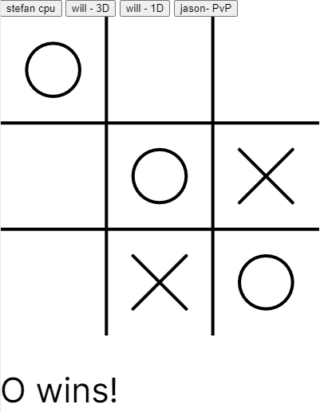

This module teaches students the fundamentals and necessities of basic JavaScript syntax. This module slowly guides people step by step through the concepts of this language. This module provides a thorough explanation of the popular language and its application thus providing a thorough foundation of JavaScript. The aspect of this module that made the most significant impact on me was learning about construct functions, loops and arrays since they help me make most of my websites today. To this day these principles are mainly what allows me to make all of my JS projects.

This module teaches students the introduction and basics of HTML to help people create their websites. It provides a good foundation for HTML comprehension for its tags, documentation or even importing data. This module provided me with great basic knowledge of HTML for me to expand on in the future and I plan on continuing my web designing abilities with HTML. The aspect of this module that made the most significant impact on me was learning to make tables and buttons in HTML as they allowed me to make better-looking websites in future websites I made following this module.

This module teaches students the very versatile JavaScript library that is p5. This module provides a thorough walkthrough of this brilliant library that uses fundamental concepts of visual programming, drawing and colouring 2D primitive shapes, creating animations, creating interactive visualization with mouse and keyboard, and manipulating images and videos which helps make generative visualizations. Using the p5 library, allowed me to make many complex games and refactorings in the course and I still use it frequently in my projects to make sophisticated web pages. The aspect of this module that made the most significant impact on me was making animation and keyboard and mouse controlled animations since they allowed me to make fun interactive animations for my future websites.
This module teaches students about storing, querying and manipulating data using SQL. This module shows step by step how to insert, extract, manipulate and extrapolate data in SQL to manage and store data effectively. As I work on bigger and bigger projects in the future, I will need to store and manage more and more data and learning SQL allows me to efficiently do that. The aspect of this module that made the most significant impact on me was learning how to insert, sort and extrapolate the data I enter since I feel that in the future, I will be able to manage bigger projects that contain a lot of data in the future.
This module expands students' knowledge of JavaScript. Using basic physics and mathematical concepts. This module shows how the uses of Randomness, Noise, Vectors, Forces, Angular Movement, Oscillations and Particle Systems, can be incorporated into JS code to simulate real-life events. Using these natural concepts, I can create more realistic and more visual-based websites to make my future projects more appealing. In addition, I can continue to learn Natural Simulations by reading “The Nature of Code" by Daniel Shiffman. The aspect of this module that made the most significant impact on me was the incorporation of trigonometry in Natural Simulation because I did not know that I could imply such complexity into coding and this motivates me to continue learning more concepts in computer science.
This module uses past knowledge of making interactive web pages in HTML, CSS and JS and further improves this knowledge using the jQuery library. By teaching jQuery, students can find HTML elements, modify them, use chaining functions and loops to further extend the capacity of interaction in their web pages. I feel that the aspect that made the most significant impact on me was learning form processing with jQuery since it opened an entirely new branch of interactive possibilities in my future web pages and I plan on implementing that.
This module incorporates the knowledge of JS, HTML & CSS and the use of the DOM API library to make HTML web pages interactive. The module teaches students how to find, access and manipulate HTML elements to make the web pages reactive and animated to improve people's ability to improve their web pages. As a person who likes everything more interactive, I will continue to use the DOM API to make my future projects more interactive. The aspect of this module that made the most significant impact on me was learning the DOM API access methods since I can easily access multiple HTML elements with better efficiency.
This module is built on the foundation of students' basic coding knowledge and using mathematics, strings, conditionals, logical equivalence(booleans), procedures, repetition and lists, it helps people get a more profound understanding of computer science concepts. Using this module introduces me to more advanced computer science concepts and I can use this knowledge in my future learnings to improve my coding skills. Learning these advanced computer science concepts is important to me as it allows me to continue learning about simple tools in computer science that improves efficiency.

This module uses students' knowledge in programming and creativity to create projects of their wish. This project taught me how to use my creativity and knowledge from all the other modules to create an interactive and fun coding project. The most significant aspect of this project was the troubles I encountered while making this project since I had no reference code and this teaches me to persevere and improve my troubleshooting skills in the future.

This module was to recreate and refactor one of Professor Daniel Shiffman’s Coding Challenges as well as recreate our peer’s coding challenge. This project taught students to get familiar with object-oriented refactorings to improve creativity in future projects. I think the most significant aspect of this module was the fact that it pushed me to use my creativity and knowledge to create fun and creative refactoring and this allows me to further improve on this skill in my future projects and modules.